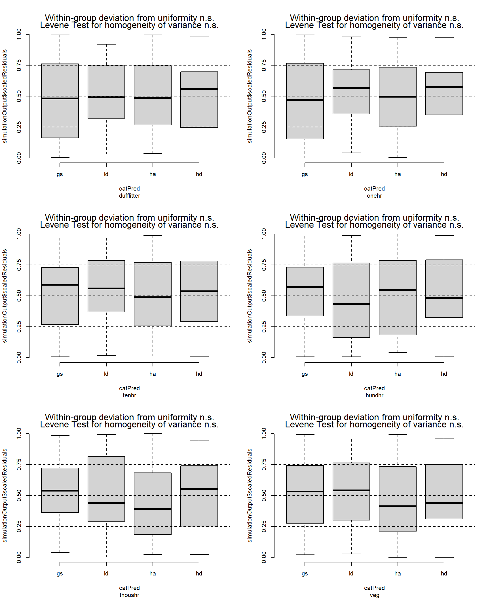
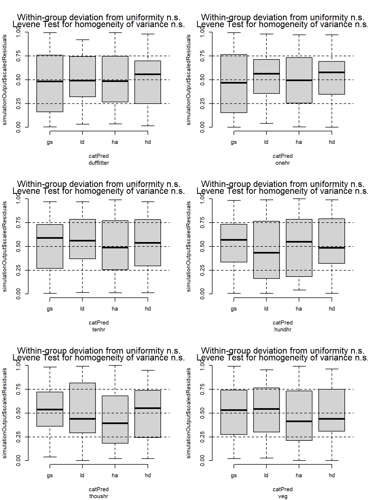
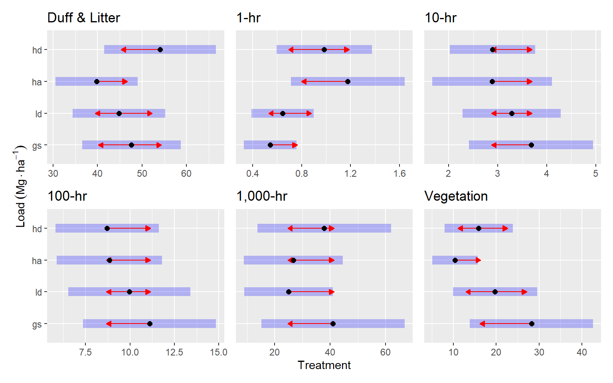
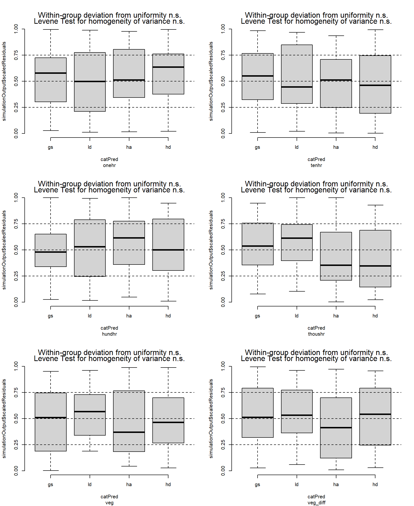
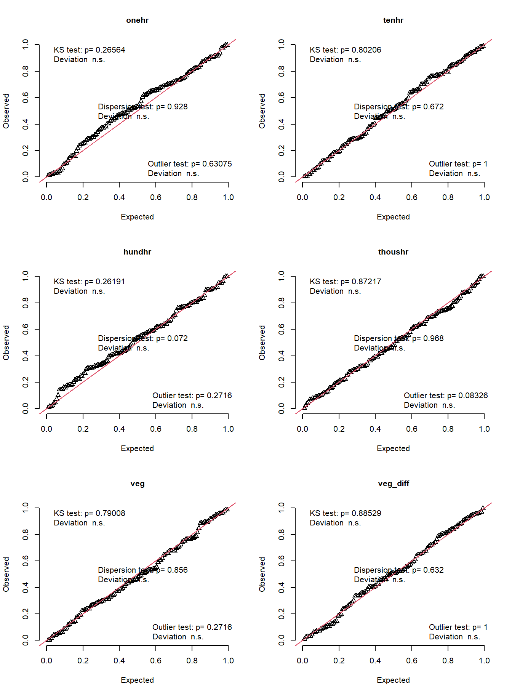
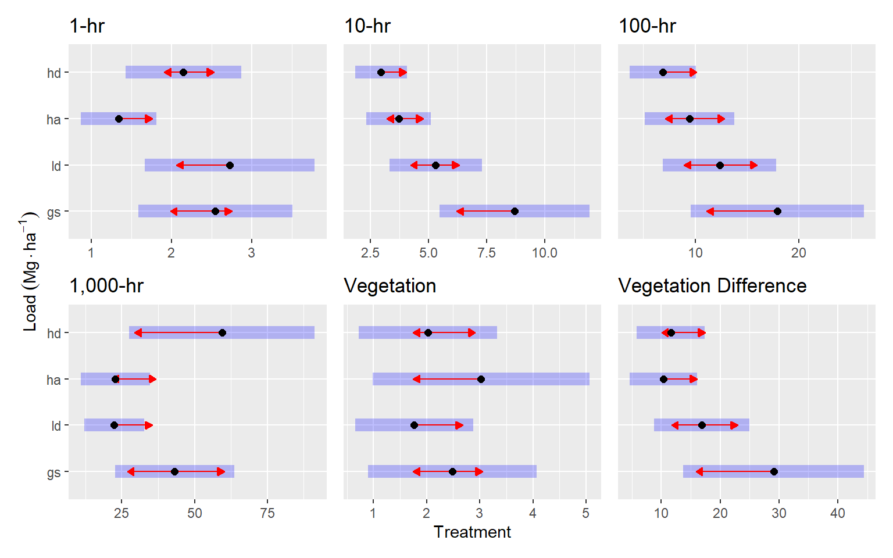

Code
load("./calculate_fuel_load.rda")
source("./scripts/get_fuel_data.r")
transectid <- c("site", "treatment", "corner", "azi")
library(glmmTMB)
library(DHARMa)
library(dplyr)
library(tidyr)
library(purrr)
library(marginaleffects)
library(ggplot2)load("./calculate_fuel_load.rda")
source("./scripts/get_fuel_data.r")
transectid <- c("site", "treatment", "corner", "azi")
library(glmmTMB)
library(DHARMa)
library(dplyr)
library(tidyr)
library(purrr)
library(marginaleffects)
library(ggplot2)This package also allows fitting flexible models, such as zero-augmented models with a gamma response, but unlike the Bayesian approach, it is fast, and familiar as it works in the frequentist paradigm.
The downside is that this package is somewhat less mature, and somewhat less supported than others, so bugs and quirks are to be expected, and the analysis of the results may be more complex.
I just realized that these two calls are the same, so I have a path forward for calculating accurate predictions
emmeans::emmeans(onehr, "treatment", component = "response")
predictions(onehr, newdata = "balanced", by = "treatment", re.form = NA, type = "response")# heres where I'll store model results
fuel_tmb <- list()
# The pre-pct data
dpre <- load2("long", "pre", -c(phase, azi)) |>
mutate(
block = paste(site, treatment),
corner = paste(block, corner)
) |>
nest(.by = class) |>
rowwise()
# The general model formula including random effects
formula <- load ~ treatment + (1 | site) + (1 | block) + (1 | corner)
# Dufflitter doesn't have any zeros, so i'm using regular gamma. I'm assuming
# gamma is a good model for all fuel classes (default)
mods <- alist(
dufflitter = glmmTMB(formula, data, family = Gamma(link = "log")),
default = glmmTMB(
formula,
data,
family = ziGamma(link = "log"),
ziformula = ~1
),
tenhr = glmmTMB(
formula,
data,
family = ziGamma(link = "log"),
ziformula = ~treatment,
dispformula = ~treatment
),
)
fuel_tmb$pre <- run_glmmtmb_mod(dpre, mods) dufflitter: glmmTMB(formula, data, family = Gamma(link = "log"))
onehr: glmmTMB(formula, data, family = ziGamma(link = "log"), ziformula = ~1)
tenhr: glmmTMB(formula, data, family = ziGamma(link = "log"), ziformula = ~treatment, dispformula = ~treatment)
hundhr: glmmTMB(formula, data, family = ziGamma(link = "log"), ziformula = ~1)
thoushr: glmmTMB(formula, data, family = ziGamma(link = "log"), ziformula = ~1)
veg: glmmTMB(formula, data, family = ziGamma(link = "log"), ziformula = ~1)I think these residuals look OK
par(mfrow = c(3, 2))
fuel_tmb$pre |>
group_walk(\(x, ...) {
simulateResiduals(x$mod[[1]], allow.new.levels = TRUE) |>
plotResiduals(form = x$data[[1]]$treatment)
title(sub = x$class)
})
par(mfrow = c(3, 2))
fuel_tmb$pre |>
group_walk(\(x, ...) {
simulateResiduals(x$mod[[1]], allow.new.levels = TRUE) |>
plotResiduals(form = x$data[[1]]$treatment)
title(sub = x$class)
})
For Duff & Litter, the largest difference was between the HD and HA treatments. The HD treatment had about 1.4 times more duff and litter (p = 0.07). Generally, all treatments were similar, with estimated loading of around 50 Mg ha-1. One-hour fuels were around 50% higher in the HA treatment compared to the LD and GS treatments (p = 0.07, and p = 0.01, respectively), with mean differences of around 0.5 Mg ha-1. Ten, hundred and thousand-hour fuels were statistically, very similar across treatments (p = 0.7 — p = 1). Point esimates varied by about 1, 3, and <20 Mg ha-1 for ten, hundred, and thousand-hour fuels, respectively.
fuel_pre_summaries <- fuel_tmb$pre |>
mutate(
class = fuel_class_labels[as.character(class)],
pred = list(predictions(
mod,
by = "treatment",
re.form = NA
)),
comp = list(comparisons(
mod,
variables = list(treatment = "pairwise"),
by = "contrast",
re.form = NA
)),
emmobj = list(get_emmobj(pred, comp, "treatment"))
)
fuel_pre_summaries |>
group_map(function(x, ...) {
x$emmobj[[1]] |>
plot(comparison = TRUE) +
labs(
title = x$class,
y = expression(Load ~ (Mg %.% ha^-1)),
x = "Treatment"
)
}) |>
patchwork::wrap_plots() +
patchwork::plot_layout(axes = "collect")
Here are the (nearly) significant (p <= 0.1) pairwise comparisons in table form
mutate(fuel_pre_summaries, pairs = list(as_tibble(pairs(emmobj)))) |>
select(class, pairs) |>
unnest(pairs) |>
filter(p.value <= 0.1) |>
knitr::kable()| class | contrast | estimate | SE | df | z.ratio | p.value |
|---|---|---|---|---|---|---|
| Duff & Litter | ha - hd | -14.2940584 | 6.1237271 | Inf | -2.334209 | 0.0903743 |
| 1-hr | gs - ha | -0.6342764 | 0.2335583 | Inf | -2.715709 | 0.0334660 |
| Vegetation | gs - ha | 17.8788629 | 7.0440211 | Inf | 2.538162 | 0.0542408 |
All fuel classes have zeros, except for dufflitter, but this fuel class is not really valid for post-pct data—we don’t have a depth to load equation suitable for how litter depth was gathered.
The veg_diff (pre-pct minus post-pct live vegetation) resulted in some negative values, these are mostly < 2.5 Mg/ha, and I think are attributable to measurement error. I’m simply converting negative values to zero.
Including a model for dispersion (~treatment) only increases aic marginally and only for veg.
dpost <- load2("long", "post", -c(phase, azi, dufflitter)) |>
mutate(load = if_else(class == "veg_diff" & load <= 0, 0, load)) |>
mutate(
block = paste(site, treatment),
corner = paste(block, corner)
) |>
nest(.by = class) |>
rowwise()
# same general formula as for pre-pct
formula <- load ~ treatment + (1 | site) + (1 | block) + (1 | corner)
mods <- alist(
default = glmmTMB(
formula,
data,
family = ziGamma(link = "log"),
ziformula = ~1
),
onehr = glmmTMB(
formula,
data,
family = ziGamma(link = "log"),
ziformula = ~1,
dispformula = ~ treatment + site
),
hundhr = glmmTMB(
formula,
data,
family = ziGamma(link = "log"),
ziformula = ~ treatment + site,
dispformula = ~ treatment + site
)
)
fuel_tmb$post <- run_glmmtmb_mod(dpost, mods) onehr: glmmTMB(formula, data, family = ziGamma(link = "log"), ziformula = ~1, dispformula = ~treatment + site)
tenhr: glmmTMB(formula, data, family = ziGamma(link = "log"), ziformula = ~1)
hundhr: glmmTMB(formula, data, family = ziGamma(link = "log"), ziformula = ~treatment + site, dispformula = ~treatment + site)
thoushr: glmmTMB(formula, data, family = ziGamma(link = "log"), ziformula = ~1)
veg: glmmTMB(formula, data, family = ziGamma(link = "log"), ziformula = ~1)
veg_diff: glmmTMB(formula, data, family = ziGamma(link = "log"), ziformula = ~1)# nolint start
# AIC(
# glmmTMB(
# formula,
# dpost$data[[3]],
# family = ziGamma(link = "log"),
# ziformula = ~ treatment + site,
# dispformula = ~ treatment
# ),
# glmmTMB(
# formula,
# dpost$data[[3]],
# family = ziGamma(link = "log"),
# ziformula = ~ treatment + site,
# dispformula = ~ treatment + site
# )
# )
# nolint endResiduals looking pretty good.
par(mfrow = c(3, 2))
fuel_tmb$post |>
group_walk(\(x, ...) {
simulateResiduals(x$mod[[1]], allow.new.levels = TRUE) |>
plotResiduals(form = x$data[[1]]$treatment)
title(sub = x$class)
})
par(mfrow = c(3, 2))
fuel_tmb$post |>
group_walk(function(x, ...) {
simulateResiduals(x$mod[[1]], allow.new.levels = TRUE) |>
plotQQunif(main = x$class)
})
Post-pct resulted in greater stratification of treatments. One-hour fuels were generally around 2.4 Mg ha-1, but the HA treatment had around half of that amount (p = 0.01 — p = 0.02). The GS treatment had the greatest 10-hr fuel loading with 8.8 Mg ha-1, which was about 1.6, 2.3 and 2.9 times greater than the LD, HA, and HD treatments respectively (p = 0.03, p < 0.001, for the others, respectively). The LD treatment also had about 1.7 times more 10-hr fuels that the HD treatment (5.4 vs. 3 Mg ha-1, p = 0.001). Hundred-hour fuels were also greatest in the GS treatment, with an average of about 19 Mg ha-1, which was about 2.6 times greater than in the HD treatment (7 Mg ha-1, p < 0.001). Thousand-hour fuels were greatest in the HD treatment, with 80 Mg ha-1, which was about 2.7 times greater than the LD and HD treatments (p = 0.03 and p = 0.05, respectively). Fuel loading for live vegetation was similar across treatments at around 2.5 Mg ha-1. The pre-post vegetation difference was greatest in the GS treatment at about 31 Mg ha-1, which was 2.5 and 2.8 times the HD and HA treatments, respectively (p ≈ 0.01).
fuel_post_summaries <- fuel_tmb$post |>
mutate(
class = fuel_class_labels[as.character(class)],
pred = list(predictions(
mod,
by = "treatment",
re.form = NA
)),
comp = list(comparisons(
mod,
variables = list(treatment = "pairwise"),
by = "contrast",
re.form = NA
)),
emmobj = list(get_emmobj(pred, comp, "treatment"))
)
fuel_post_summaries |>
group_map(function(x, ...) {
x$emmobj[[1]] |>
plot(comparison = TRUE) +
labs(
title = x$class,
y = expression(Load ~ (Mg %.% ha^-1)),
x = "Treatment"
)
}) |>
patchwork::wrap_plots() +
patchwork::plot_layout(axes = "collect")
Here are the (nearly) significant (p <= 0.1) pairwise comparisons in table form
mutate(fuel_post_summaries, pairs = list(as_tibble(pairs(emmobj)))) |>
select(class, pairs) |>
unnest(pairs) |>
filter(p.value <= 0.1) |>
knitr::kable()| class | contrast | estimate | SE | df | z.ratio | p.value |
|---|---|---|---|---|---|---|
| 1-hr | gs - ha | 1.2063293 | 0.3830442 | Inf | 3.149321 | 0.0088860 |
| 1-hr | ld - ha | 1.3848116 | 0.4230377 | Inf | 3.273495 | 0.0058546 |
| 1-hr | ha - hd | -0.8079136 | 0.2573650 | Inf | -3.139174 | 0.0091875 |
| 10-hr | gs - ld | 3.3836605 | 1.3637383 | Inf | 2.481166 | 0.0628592 |
| 10-hr | gs - ha | 4.9719438 | 1.3762890 | Inf | 3.612573 | 0.0017243 |
| 10-hr | gs - hd | 5.7319826 | 1.4049042 | Inf | 4.079981 | 0.0002631 |
| 10-hr | ld - hd | 2.3483221 | 0.8390314 | Inf | 2.798849 | 0.0263712 |
| 100-hr | gs - hd | 11.0312648 | 3.9306135 | Inf | 2.806500 | 0.0257894 |
| Vegetation Difference | gs - ha | 18.6930606 | 7.3510442 | Inf | 2.542912 | 0.0535692 |
| Vegetation Difference | gs - hd | 17.4714067 | 7.4195087 | Inf | 2.354793 | 0.0860220 |
save(
fuel_class_labeller,
fuel_class_labels,
fuel_class_labels2,
fuel_tmb,
get_emmobj,
correct_contrast_order,
file = "fuel_modeling_round_3.rda"
)